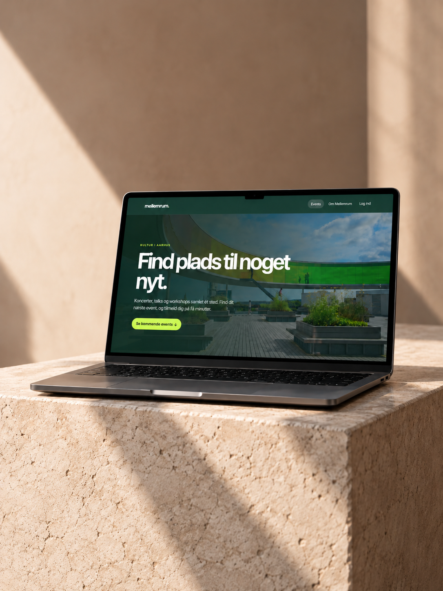
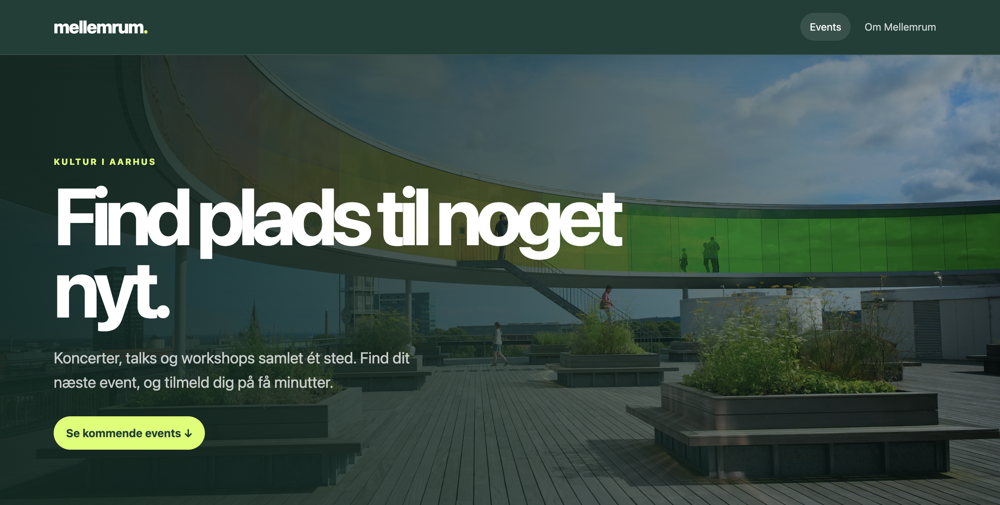
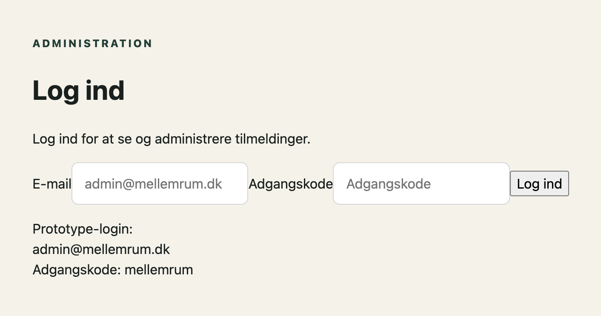
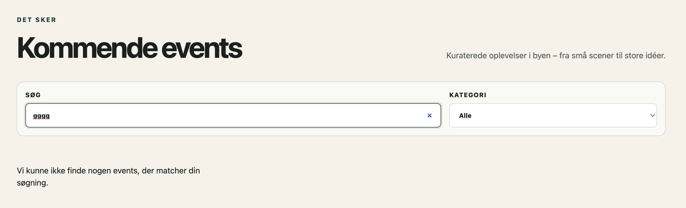
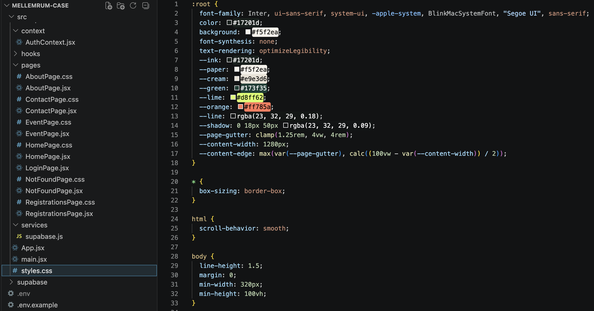

Brugersikkerhed
Jeg har prioriteret at undersøge brugersikkerheden og lave løsningen mere sikker.
CASE 01
Mellemrum er en lokal kulturplatform, hvor brugere kan finde, oprette og tilmelde sig events. Projektet tog udgangspunkt i en eksisterende React-løsning, som jeg har forbedret med fokus på en bedre brugeroplevelse, accessibility og en mere vedligeholdelsesvenlig kode.

Den eksisterende løsning havde en række udfordringer, som gik ud over brugeroplevelsen og tilgængeligheden. UX var inkonsistent, koden var ikke vedligeholdelsesvenlig, og der manglede tydelig feedback i særligt tilmeldings- og søgeflowet.

Jeg undersøgte den eksisterende løsning for at identificere de vigtigste forbedringspunkter. Jeg prioriterede de områder, hvor ændringer kunne skabe størst værdi for brugerne og gøre løsningen lettere at vedligeholde, fremfor at fokusere for meget på det visuelle. Her er 3 udvalgte forbedringer, jeg har arbejdet med.
Jeg har prioriteret at undersøge brugersikkerheden og lave løsningen mere sikker.
Jeg har undersøgt fejlhåndtering og loading for at gøre løsningen mere robust.
En af mine større prioriteter var at undersøge, hvor vedligeholdelsesvenlig koden var og forbedre dette.

Jeg har tilføjet en login-prototype til tilmeldingsoversigten, så personlige oplysninger som navne og e-mailadresser ikke vises direkte for uvedkommende. I en færdig løsning kræver det selvfølgelig reel adgangskontrol.

Jeg har implementeret fejlbeskeder og loading-states, så brugeren får tydelig feedback undervejs. Hvis man eksempelvis søger efter et event, der ikke findes, vises en fejlbesked, som forklarer, hvad der sker.

1 ting jeg har gjort ifbm. vedligholdelse af koden er, at opdele CSS i separate filer, så styles er lettere at finde og vedligeholde. Det mindsker risikoen for utilsigtede påvirkninger mellem komponenter og gør koden lettere at videreudvikle og samarbejde om.
Brugere kan finde og tilmelde sig events og får tydelig feedback undervejs.
Fejlbeskeder og loading-states gør det tydeligere, hvad der sker i løsningen.
En mere struktureret kodebase gør det nemmere at videreudvikle projektet.
Projektet har givet mig en dybere forståelse for, hvordan små ændringer i både kode og UX kan gøre en stor forskel for brugernes oplevelse. Det har styrket mine kompetencer inden for React, Supabase og frontend-udvikling og givet mig erfaring med at arbejde mere struktureret og langsigtet. Næste skridt i denne case kunne være at arbejde mere med selve designet og implementere en database for administratorer og brugere, så platformen kan fungere i praksis.
Jeg har fået mere erfaring med at arbejde med React, Supabase og håndtering af data i en virkelig løsning.
Arbejdet med brugeroplevelsen har givet mig indsigt i, hvordan små detaljer kan have stor betydning for den samlede oplevelse.
Jeg har lært at strukturere koden mere bæredygtigt, så projektet er lettere at vedligeholde og videreudvikle.